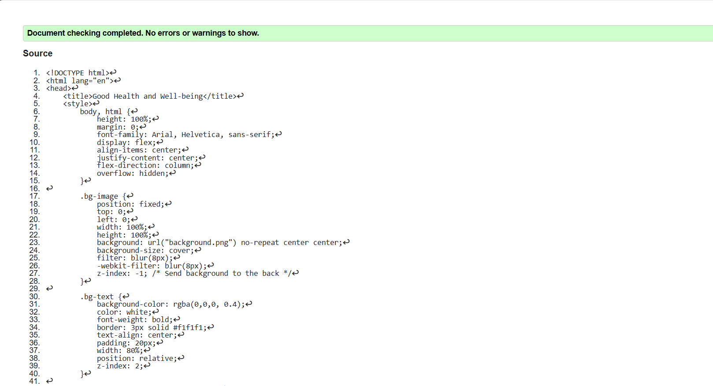
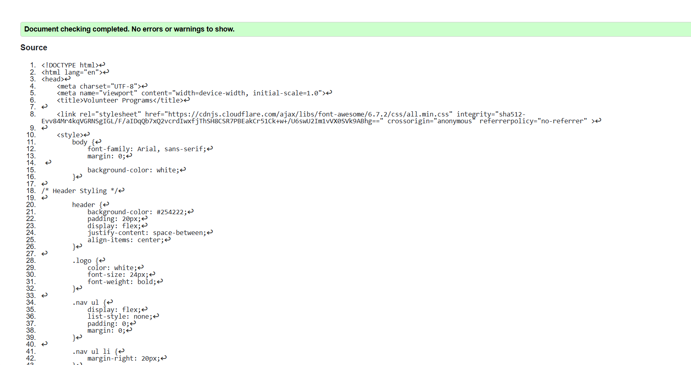
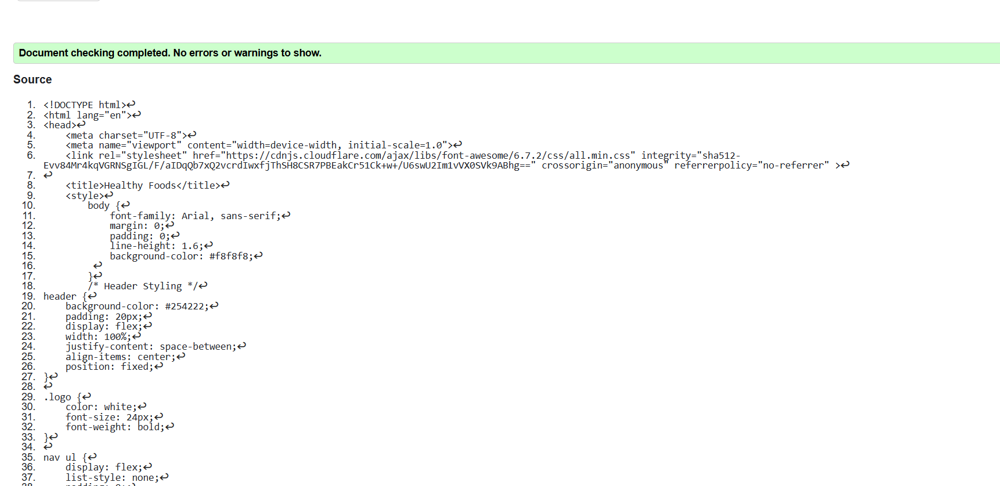

Splash Page validation report
Include a short reflection on the validation report for the pages you implemented.

Back to Splashscreeen page
Include a link back to the corresponding section of the Page Editor.
Volunteer Page validation report
Include a short reflection on the validation report for the pages you implemented.

Back to Volunteer page
Include a link back to the corresponding section of the Page Editor.
Content Page validation report
Include a short reflection on the validation report for the pages you implemented.

Back to Page Editor page
Include a link back to the corresponding section of the Page Editor.